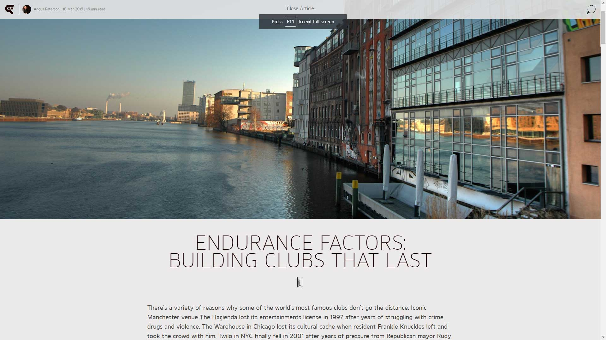
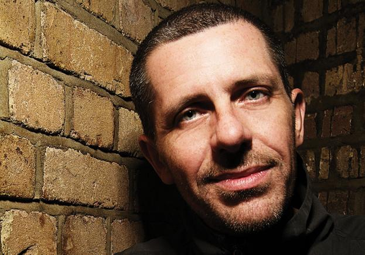

Endurance Factors: Building Clubs That Last
{kind=link}

There’s a variety of reasons why some of the world’s most famous clubs don’t go the distance. Iconic Manchester venue The Haçienda lost its entertainments license in 1997 after years of struggling with crime, drugs and violence. The Warehouse in Chicago lost its cultural cache when resident Frankie Knuckles left and took the crowd with him. Twilo in NYC finally fell in 2001 after years of pressure from Republican mayor Rudy Giuliani.
More recently, while London’s decades-old Ministry of Sound pulled off a ‘Lazarus Rising’ in January by beating longrunning property development threats, Berlin’s much-appreciated Horst closed its doors last year following what was identified as "a long and tiring battle against the windmills of money." What are some of the factors that allow a club or events brand to survive?
Impermanent by nature?
A place and time that captures perfectly the impermanence of clublife are the early days of Berlin’s techno scene, evolving in the fall of the Berlin Wall. With more than a third of the buildings in the city’s East lying unoccupied after reunification, the scene was defined by a nomadic attitude in how those derelict buildings were utilised. It was a more extreme variant on what was happening elsewhere, with dance culture growing in illegal warehouse parties around the world.
"...We want something that we can work on for the next ten years or so...."
Clubs rarely last in the one location for long, though a shift began in 2002 when the iconic Watergate opened on the River Spree. Uli Wombacher, co-founder and now the main booker for the club, says there was a definite desire to transcend the impermanence of the city’s scene.
“I come from a background in the 90s when clubs weren’t permanent, you were moving from one temporary location to the next. The city was developing around the clubs, and the parties had to move to different locations because of the noise. We’d done illegal clubs and parties, but then we’d said OK, we want something that we can work on for the next ten years or so. That was our main goal; we were intentionally looking for a location we could rent for the long term.”
While the intention to put down roots was there from the beginning, the actual strategy that has enabled Watergate’s long term survival is something that developed over the years.
“There was no initial strategy behind it. We were all experienced with promoting parties, and I’d been DJing myself for 10 years as well as working in a record shop for nearly that long, so I knew the business from all sides. But still, the task to run the club on a fulltime basis, as opposed to having infrequent parties… it was something we did not expect to be so difficult.”
Watergate opened with the lofty intention of showcasing the entire spectrum of electronic music in its programming, starting with hip-hop and drum & bass, right through to house and techno.
“We discovered after a few years that this leads to confusion; because people expect something from you when they go to a club. They leave the club with the feeling of having a good party and experiencing the vibe, and they want to experience that same vibe again when they return.”This led to the challenge of shaping a consistent identity via careful music programming, of keeping the balance of remaining both fresh and reliable at the same time; a more pragmatic and precise attitude, which has led to a strategy that appears unshakable.
“The more we learned about running a club, and programming the nights, the more we learned about crafting our own identity,” says Wombacher. “People connect the name Watergate with a certain kind of music, with a certain kind of party vibe, and I have to be steady with that, to not disappoint the people coming, or to give them bad feelings about the development of the brand.”
“Of course we want to be on the cutting edge, to be representing new record labels and artists. But at the same time, that has to be done in a way that can be understood by the audience. You have to understand that this place holds 800 to 1000 people, and we cannot afford to be too experimental in what we’re trying to do. That’s appropriate maybe when you’re running a club with capacity for 200… but we’re programming around 200 parties in a year, if the bookings were still based around my personal tastes, I can tell you we’d be dead after a month”.
"...Everyone who is booked to play at Watergate is someone I can stand behind..."
However, strategic programming and brand curation is differentiated from the kind of creative compromises that would water down a club’s reputation.
“Everyone who is booked to play at Watergate is someone I can stand behind. I would never book Tiësto or whatever, because people wouldn’t trust us anymore. They would be thinking, what is Watergate doing, are they aiming for the big money now? We try not to lose our way, or our connection with our past.”
As the flipside to consistent musical programming though, it can lead to the point where a club’s identity can rise above names they’re booking, to be assured of an audience regardless of the DJs playing; of which Watergate can count itself as one of the rare examples.
"...Clubs come and go, but if they aim to remain, then it’s a task..."
“As a club, we don’t depend too much on the big names anymore. Even if the lineup is not so strong, we will still have a lot of people coming. So these are the people coming for the brand, for the ‘Watergate experience’ or whatever you want to call it. So at this stage you’re actually more free with how you program.”
Wombacher also emphasises the long term considerations in keeping a club going; building a brand and reputation takes at least 2 to 3 years, followed by another several years where the club is at the height of its reputation. What happens after that is crucial.
“When Watergate was at its height we had way more people than we could ever accommodate. Eventually most will have seen the club already, and we’re not anything new or special anymore, so the goal then is to keep the quality.”
“And this is how the lifespan goes; opening and building a club, having your time in the light, and then working to keep it up there. Because clubs come and go, but if they aim to remain, then it’s a task. There are several in Berlin, there is fabric in London, and there is Rex Club in Paris. There’s just a few locations around this planet that manage to stay there for a long time.”
The long path to the opening of fabric
If the identity of Watergate was defined by early idealism that evolved into a more considered and practical approach, then the journey leading to the opening and subsequent success of fabric in London is a story of idealism triumphing in the face of insurmountable odds.
Club owner and founder Keith Reilly threw his first warehouse party in 1978, before eventually embarking on a journey in the early 90s to open a club that would realise his own vision of underground dance culture; coming at times at a catastrophic cost for him personally, leading him to sell his two homes, and in his own words, driving him to the edge of financial ruin.
{kind=link}

When fabric finally opened its doors in 1999, in a converted basement cold storage unit opposite the London Smithfields meat market, it didn’t go unnoticed that the Home ‘superclub’ had also just opened up over in the West End. This was during the peak of the UK’s obsession with ‘superstar DJs’.’ It’s telling though that Home lasted barely more than a year, while fabric became one of the world’s truly iconic clubs.
Reilly is a passionate driving force behind a truly impressive and diverse number of art and music projects around the world, which stretch far beyond the basement brick walls of fabric; and he is remarkably upbeat when he speaks to DJBroadcast.
“I think the truth about this ‘endurance factor’ is that it is very closely related to the individual’s motivation for doing this. And I think that is very much is driven by the impact that the music has on them. I’ve lived my life through music; I’ve collected around 600,000 pieces of vinyl since I was 13, and I have hundreds and thousands of CDs and radio recordings.”
"...I sacrificed everything for the club. I sold two family homes, I lived my life in debt, and I even lost my marriage..."
“Music impacts certain people in that way. If you’re that type of person, and that’s been your motivation, the central core of what you’re doing is going to be so much more authentic and pure. That’s what led to the opening of fabric, and it’s the core philosophy that permeates everything we do as a team. We all share that lifestyle, that culture, those experiences”.
While Wombacher’s approach in developing the approach to music programming for Watergate saw him tempering his passions to a degree, what Reilly relates to is a little different.
“We only ever book what we believe in. And that way you can’t ever get it wrong. For some it’s like a guessing game, and you’re just trying to second guess what the latest fad is. Play any guessing game and you’re eventually going to get it wrong, it’s just probability. But I’m 53 years old, I’m not about to start second guessing what kids might love. My job as a promoter is really very simple… it’s to scour the world to search for beautiful things, and then say, ‘look at what I found’. That might be a DJ, or the artwork in our flyers. For me, it’s a very, very simple thing.”
Reilly says the support from the crowds for fabric has been “unbelievably consistent” since opening. It’s reassuring to hear that genuine passion has translated into enduring success; though when it’s put to Reilly that underground culture can sometimes tend to grind sincere passion down, he emphasises the personal sacrifices involved in getting fabric open.
“I’m not what you would call successful. The club is successful, and it’s been responsible for generating hundreds of millions of pounds in revenue over the years. But I sacrificed everything for the club. I sold two family homes, I lived my life in debt, and I even lost my marriage through it; so I wouldn’t say it necessarily translates into material success for me.
“But as a team, we run fabric almost like a workers co-op. Everything is about keeping the club going, and making sure we can do things as best as we possibly can. The sacrifices we might need to make, they don’t feel like sacrifices. Nothing gives me greater pride than when a DJ plays an amazing set at the club, and then you see what that means to people, that look they get in their eyes… that is stronger than anything else.”
"If I was applying for the location now, I am sure that I would never get it”
Getting the setting right
Watergate’s location on the banks of the River Spree contributes immeasurably to the identity of the club; so it’s hard to conceive that it was considered a risk in the early days, when Berlin’s Kreuzberg district had yet to develop into the hub of activity that it us now.
“The location that we have, it’s super exposed next to the river and basically in the heart of Berlin. It’s almost a wonder that we can even have this as a permanent location for Watergate,” says Wombacher. “At this point, 12 years after opening and everything that has happened in the district, the gentrification process and the people who have moved here… if I was applying for the location now, I am sure that I would never get it.”
“So that was our lucky moment. You have to follow a goal, but luck plays an important role as well, because with running a club you’re never on the safe side”.
For Reilly, the search for the ideal location was one of the reasons that it took so long to open fabric in the first place. “It literally took me ten years of searching endlessly for properties. But what you’re looking for is essentially the architectural nature of the building. I’d been putting on warehouse parties for many, many years before I opened fabric. You go into the building, and as a promoter it’s so palpable, it’s like you can almost hear the music.”
“It’s a very difficult thing to do, but I’m really, really glad I persevered. There are points where you think, fuck it I’ll just accept this place. You just wanna get out of the traps and get going. And by the time I got to opening fabric, I was literally on my last gasp of financial oxygen.”
Both Wombacher and Reilly have watched the community develop around their clubs since they opened; and both nominate a strong relationship with your surroundings as a key to longevity.
“I think people understand we’re part of what makes the area a cool part of London"
“Even when you have that permanent location, you’re still situated weakly in terms of your place in the community. Your neighbours might complain about the noise, and something might happen out the front of the club that is not so cool for your reputation…There are always things happening that could halt what you’re trying to do, you have to expect every day to be your last.”
Wombacher says it’s crucial to remember that ultimately, you’re still operating within a subculture. “What we’re doing is something that only a small percentage of people understand. The rest wouldn’t have a clue what clubbing is, what nightlife is, what staying up to the next day means, what enthusiasm for electronic music means. So it’s crucial to have a good relationship with your neighbours, because you’re always in the weaker position. If you want to stay in a place for a long time, you must be part of the community… instead of being the freak.”
Now Watergate has confidence in its relationship with the district and its politicians, and similarly, Reilly says he’s earned his stripes in an area that is now bustling.
“I think people understand we’re part of what makes the area a cool part of London now. But outside of that, you still need to meet your obligations in terms of being good neighbours to these people. Certain forms of art have always been part of our industry, particularly graffiti, and we’ve painted nearly every shopfront in the area… We do understand we attract a lot of people who might be prone to this kind of thing. So we just go out and give them a fresh lick of paint.”
"The more popular you become, the more you will be mentioned in magazines that you don’t necessarily want to be in"
There for the longrun
The other factor that has assisted immeasurably to the longevity of both clubs, and is denied to the clubbing market of a country like Australia, is the luxury of an international audience. Clubbers travel to London from all over Europe to visit fabric, while the term ‘Easyjet Raver’ sprang up a few years after Watergate opened, to describe the crowd jetting in for a taste of the Berlin nightlife. Wombacher paints it as a positive thing.
“As long as people are coming for the love of electronic music,” he says. “Of course, there will always be those saying that you’ve turned into a tourist location. The more popular you become, the more you will be mentioned in magazines that you don’t necessarily want to be in. There’s nothing I can do about that, and that’s why we have our door policy.”
When asked what the biggest factor is that often leads to a club’s demise, Wombacher points to the location upon which a club is leased. Sometimes it’s not meant to be forever.
“When promoters rent places that are planned to be refurbished in three or four years, they cannot complain if they have to leave at some point. If it was a temporary location, then you don’t have the right to insist on keeping it. That is something people sometimes tend to forget.”
Reilly on the other hand has his own conflicted experiences with his own club that didn’t survive. Matter opened at the O2 Arena in south-east London in 2008, with Reilly taking an active part in the venue’s lauded design; though he classes it as an “aberration” that was never meant to be a club, instead his “grand experiment” that was intended to function as a space for Arena parties during the week, while being used a space for experimental art installations on the weekend.
When the AEG entertainment group he’d partnered with reneged on aspects of the agreement, Reilly was forced to transform Matter into a traditional club. Nonetheless, he insists it would have been viable, if not for one factor that is enough to throttle the life expectancy of any London club – tube work, with an upgrade of the Jubilee Line rendering the club practically inaccessible.
“If you look back at the figures over the respective weekends, it’s undeniable. We did four or five Cocoon nights down there, three of them when with tubes running and it was a full house with around 4,000 people throughout the night. And the nights with no tube, around 500 people. We had in excess of 80 percent of the weekends with no tube service at all, and it just killed it.”
This led to the difficult situation upon Matter’s closure where fabric was sent into administration, due to a cross-guaranteed loan, with the club actually placed briefly on the market in 2010. Reilly was able to rescue the club a new business partnership, and it continues to thrive to this day. To tackle the bigger obstacles though of working in electronic music, you need to dig deep.
“Imagine how I felt after being shafted by these assholes over at AEG… you feel distraught. But you just go home and put on a Richie Hawtin album and say, this is what it’s all about. Everything else is totally meaningless and transitory. The difficult times are made so much easier, simply because of the fact that you always have this natural recharge to draw on.”